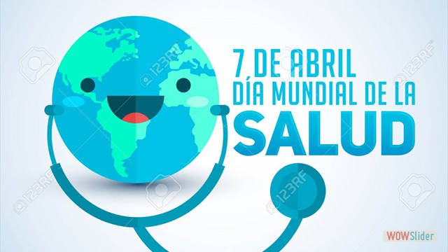
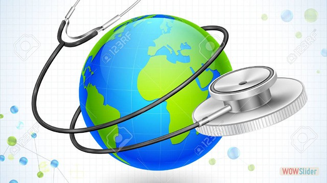
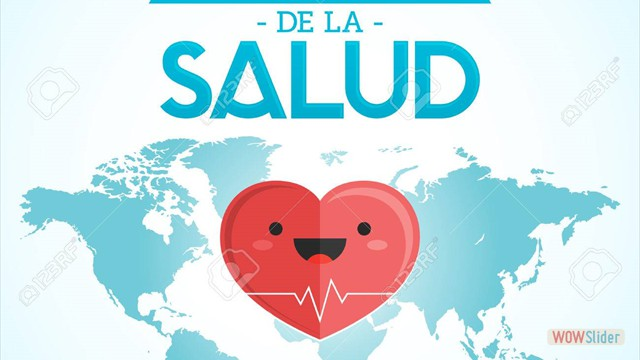
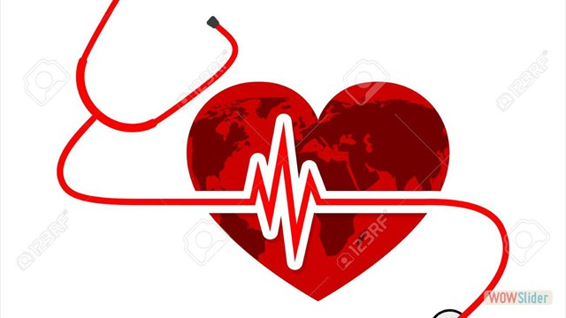
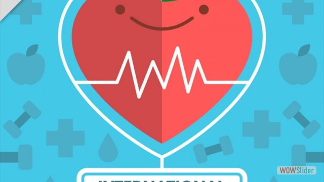
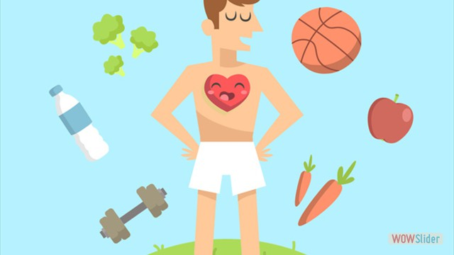

Día Mundial de la Salud 7 de abril
INFOGRAFIA

- 
- 
- 
- 
- 
- 
image carousel by WOWSlider.com v8.8
Se celebra el 7 de abril del 2019 la Organización Mundial de la Salud se fundó sobre la base del principio de que todas las personas deberían poder hacer efectivo su derecho al grado máximo de salud que se pueda lograr.
Por lo tanto, la “Salud para todos” ha sido la visión que nos ha guiado a lo largo de más de siete decenios. También es el motor de la actual iniciativa impulsada a nivel de toda la Organización de ayudar a los países a avanzar hacia la cobertura sanitaria universal (CSU).
La experiencia nos ha demostrado, una y otra vez, que la cobertura sanitaria universal se logra cuando existe una firme determinación política.
Así pues, en este año en que celebra su septuagésimo aniversario, la OMS pide a los líderes mundiales que respeten los compromisos que contrajeron cuando acordaron los Objetivos de Desarrollo Sostenible en 2015, y que se comprometan a adoptar medidas concretas para promover la salud de todas las personas. Ello significa garantizar que todas las personas, en cualquier lugar, puedan tener acceso a servicios de salud esenciales y de calidad sin tener que pasar apuros económicos.
La Organización dedicará una atención de alto nivel a la CSU por medio de una serie de actos organizados a lo largo de 2018, que comenzarán con el Día Mundial de la Salud, el 7 de abril, con conversaciones a nivel mundial y local sobre la manera de alcanzar el objetivo de la salud para todos.
Algunos países ya han logrado importantes avances hacia la cobertura sanitaria universal. Aun así, la mitad de la población mundial todavía no puede acceder a los servicios de salud que precisa. Si los países quieren alcanzar la meta de los ODS, mil millones más de personas deberán beneficiarse de la CSU de aquí a 2023.
El Día Mundial de la Salud pondrá en el candelero la necesidad de la CSU y los beneficios que puede aportar. La OMS y sus asociados intercambiarán ejemplos de medidas que pueden adoptar para lograrla mediante una serie de actos y conversaciones que se celebrarán en distintos niveles.
Como ha afirmado nuestro Director General, “Nadie debería tener que elegir entre la muerte y las dificultades económicas. Nadie debería tener que elegir entre comprar medicamentos y comprar alimentos”.
Las campañas mundiales de salud pública son una gran oportunidad para aumentar la concienciación y los conocimientos sobre los problemas de salud y para movilizar apoyos en todos los ámbitos, desde el local hasta el internacional. A lo largo del año hay muchos días mundiales sobre problemas de salud o afecciones concretas: de la “A” de Alzheimer a la “Z” de zoonosis. Sin embargo, la OMS presta especial atención a los siete días y a la semana que los Estados Miembros de la OMS han designado como campañas mundiales de salud pública “oficiales”:
Si lleva a sus niños a vacunarse, habla a los estudiantes sobre los efectos devastadores del tabaco, organiza una donación de sangre en su comunidad o participa en charlas en línea a través de las redes sociales está contribuyendo a los esfuerzos mundiales por crear un mundo más saludable.
En este sitio web se reúne la información sobre las ocho campañas oficiales en las que se centra la OMS. Aquí encontrará la información básica, los gráficos, los enlaces multimedia, los datos y las cifras que ponen en destaque los temas de estas campañas y contribuyen a centrar la atención mundial en los principales problemas de salud pública actuales.
Caulquier informació consulta a la página
Organización Mundial de la Salud
Constitución de la OMS
La cobertura sanitaria universal tiene su sólido fundamento en la Constitución de la OMS de 1948, en la que se declara que la salud es un derecho humano fundamental y se adquiere el compromiso de garantizar a todos los más altos niveles posibles de salud.
La OMS apoya a los países para que desarrollen sistemas de salud que les permitan conseguir y sostener la CSU, así como evaluar los progresos realizados. Ahora bien, la Organización no trabaja de forma asilada, sino que colabora con diferentes asociados en situaciones muy diversas y con distintos fines, con miras a promover la cobertura sanitaria universal en todo el mundo.
Nuestro objetivo es construir un futuro mejor y más saludable para las personas de todo el mundo. A través de las oficinas que la OMS tiene en más de 150 países, nuestro personal trabaja junto con los gobiernos y otros asociados para que todas las personas gocen del grado máximo de salud que se pueda lograr.
Juntos nos esforzamos por luchar contra las enfermedades, ya sean infecciosas, como la gripe y la infección por el VIH, o no transmisibles, como el cáncer y las cardiopatías. Ayudamos a que las madres y los niños sobrevivan y avancen en la vida para que puedan conservar la salud hasta una edad avanzada. Velamos por la salubridad del aire que respiran las personas, de los alimentos que comen y del agua que beben, así como de los medicamentos y las vacunas que necesitan.
La cobertura sanitaria universal (CSU) implica que todas las personas y comunidades reciban los servicios de salud que necesitan sin tener que pasar penurias financieras para pagarlos. Abarca toda la gama de servicios de salud esenciales de calidad, desde la promoción de la salud hasta la prevención, el tratamiento, la rehabilitación y los cuidados paliativos.
La CSU permite a todos acceder a servicios que atienden las causas más importantes de las enfermedades y la muerte, y asegura que la calidad de esos servicios sea suficientemente buena para mejorar la salud de las personas que los reciben.
Proteger a las personas de las consecuencias financieras que puede tener el pago de los servicios de salud reduce el riesgo de que se empobrezcan a resultas de una enfermedad inesperada que exija la utilización de los ahorros de toda una vida, la venta de bienes o el recurso a préstamos, que pueden destruir su futuro y a menudo el de sus hijos.
Lograr la CSU es una de las metas que se fijaron los países que adoptaron los Objetivos de Desarrollo Sostenible en 2015. Los países que progresan en el logro de la CSU también avanzarán hacia las demás metas relacionadas con la salud y los demás objetivos. La buena salud no solo hace posible que los niños aprendan y los adultos se ganen la vida y la gente escapen de la pobreza, sino que también sienta las bases para el desarrollo económico a largo plazo.
Los países que invierten en la CSU realizan una importante inversión en su capital humano. En los últimos decenios, la CSU ha surgido como una estrategia clave para avanzar hacia la consecución de otros objetivos relacionados con la salud y de desarrollo más amplios.
El acceso a cuidados esenciales y de calidad y a la protección financiera no solo mejora la salud de las personas y su esperanza de vida, sino que también protege a los países de las epidemias, reduce la pobreza y el riesgo de padecer hambre, crea empleos, impulsa el crecimiento económico y promueve la igualdad de género.